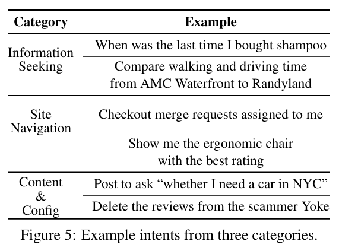

LLM operates Computers: An Introduction and Framework of RL-driven Agent
Table of Contents
1. Proposer-Agent-Evaluator (PAE)
Paper: Proposer-Agent-Evaluator(PAE): Autonomous Skill Discovery For Foundation Model Internet Agents
1.1. Observations (what a VLM can see)
Domain-specific Observations and Actions
Number Marks:
"To provide better action grounding, we follow the practice from prior works (Zheng et al., 2024; He et al., 2024) to augment the observation space with number marks on top of each interactive element such as web links and text boxes."
1.2. Task Proposer (how to generate corpus)
- Prompt, and only use the
website nameas the information - Provide the context information of a website
- Provide some screenshots and user demos (usage cases)
1.3. Evaluator (How to provide the reward & How to evaluate)
The reward is 0/1, purely result-oriented.
- the success of the final outcome
- Using VLMs as the annotator to provide the feedback
1.4. CoT Training (How to train with reasoning)
- Using the Filtered Behavior Cloning (Filtered BC) as the RL algorithm.
1.5. Experiments
1.5.1. Datasets or Environments
- WebVoyager
- Desc: 15 websites, 643 tasks (Now 13 websites with 557 tasks are available)
- https://github.com/MinorJerry/WebVoyager
- https://arxiv.org/abs/2401.13919
- WebArena
- Desc: 812 hand-crafted tasks on 5 websites
- https://arxiv.org/abs/2307.13854
- https://github.com/web-arena-x/webarena
1.5.2. Performances
1.6. TODO Source code Analysis
TODO.
2. WebArena: A Realistic Web Environment for Building Autonomous Agents
2.1. Website Selection
analyze 200 user's browser histories, and select 4 representative categories:
- E-commerce (Amazon, eBay)
- Social forum platforms (Reddit, StackExchange)
- Collaborative development platforms (GitLab)
Content Management Systems (CMS)
And then they build a simulation version of these websites.
2.2. Observations
A browser view, with tabs and web pages.
- HTML file of the webpage & a DOM tree
- screenshot of the current web page
- accessibility tree of the web page. see: https://developer.mozilla.org/en-US/docs/Glossary/Accessibility_tree
2.3. Actions
"emulates the keyboard and mouse operations"
2.4. Intents
Some universal templates while difficult and unique for each task.

2.5. Evaluation Metrics
exact_mathmust_includefuzzy_match
3. WebVoyager: Building an End-to-End Web Agent with LMMs
This work is based on Selenium (https://www.selenium.dev/), a webdriver for automatically test websites on browsers.
3.1. Observations
Same as PAE.
- screenshots with labels of clicks
- Labels are provided by https://github.com/ddupont808/GPT-4V-Act
3.2. Actions
Similar to WebArena, i.e., mouse and keyboard actions. A simplified version of code, i.e., "click [39]".
3.3. Datasets
- 15 Realistic Websites
- Omit websites that requires login or CPTCHA
- Dataset Construction: Using LLM to generate tasks, and utilize human check to filter them.
- Evaluation: including Golden Answers and Possible Answers.
- Golden: know all full list space of answers
- Possible: may not correct, or only know a partial list.
3.4. Results
4. Ragen: Not What We Need
Reasons:
- Trajectory-level is not what we need.
- This paper is still in gaming environments.
5. Tools May Take
5.1. Magentic-UI
Wechat introduction: Wechat Introduction.
Github Repository: https://github.com/microsoft/magentic-ui/
- No RL training.
- Human-AI interaction
5.1.1. Roles
- üßë‚Äçüíº Orchestrator is the lead agent, powered by a large language model (LLM), that performs co-planning with the user, decides when to ask the user for feedback, and delegates sub-tasks to the remaining agents to complete.
- üåê WebSurfer is an LLM agent equipped with a web browser that it can control. Given a request by the Orchestrator, it can click, type, scroll, and visit pages in multiple rounds to complete the request from the Orchestrator. This agent is a significant improvement over the AutoGen MultimodalWebSurfer in terms of the actions it can do (tab management, select options, file upload, multimodal queries).
- üíª Coder is an LLM agent equipped with a Docker code-execution container. It can write and execute Python and shell commands and provide a response back to the Orchestrator.
- üìÅ FileSurfer is an LLM agent equipped with a Docker code-execution container and file-conversion tools from the MarkItDown package. It can locate files in the directory controlled by Magentic-UI, convert files to markdown, and answer questions about them.
- üßë UserProxy is an agent that represents the user interacting with Magentic-UI. The Orchestrator can delegate work to the user instead of the other agents.
5.1.2. Workflow